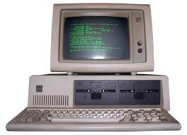
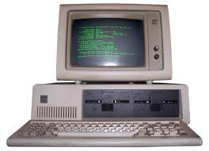

первые электронные вычислительные машины появились в средние xx века
тег spanиспользуется для выделения части текста внутри строки
ЭВМ— это электронная вычислительная машина.
Важно: первые ЭВМ занимали целые помещения.
Курсивный текст и логически выделенный текст.
Устаревшая информация
Подчёркнутый текст
Формула воды: H2O
Степень числа: 23 = 8
Мелкий текст для примечаний
Выделенный важный фрагмент
Первая строка
Вторая строка
<h1>история Эвм</h1>

 


Электро́нная вычисли́тельная маши́на (ЭВМ) — комплекс технических, аппаратных и программных средств, предназначенных для автоматической обработки информации, вычислений, автоматического управления.источник: википедия